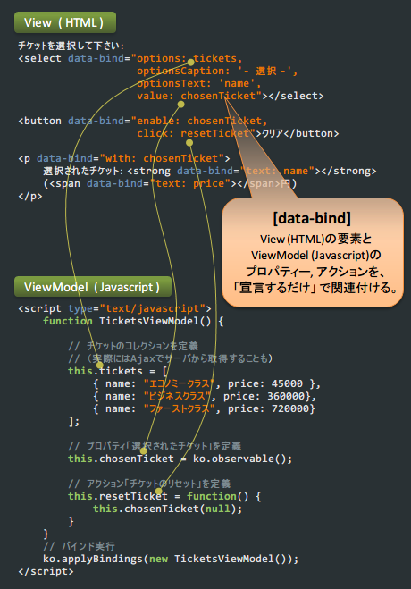

Knockout
日本語ドキュメント
このサイトは、リッチUIがサクサク書ける
JavaScript MVVM ライブラリ Knockout の
非公式翻訳ドキュメントです。
v2.2.0 対応
Knockout DEMO
チケットを選択して下さい：
選択されたチケット：
(円)

Knockoutのコンセプト
- 宣言型バインディング
- UIに必要なのは ViewModel (シンプルなモデルオブジェクト) とデータバインドだけ。
ややこしいDOM操作なしで、動的なインターフェイスを作ることができます。
- UIの自動更新
- ViewModel のプロパティが変更されると、自動的にUIの関連付けられた部分を更新します。
- 依存関係のトラッキング
- データの結合や変換を実現するためのデータ間の関係チェーンを暗黙的に設定します。
- UIテンプレート
- 幾重にもネストされたテンプレートも、バインドされた ViewModel を用いて
素早くUIを生成します。
さらに詳しく